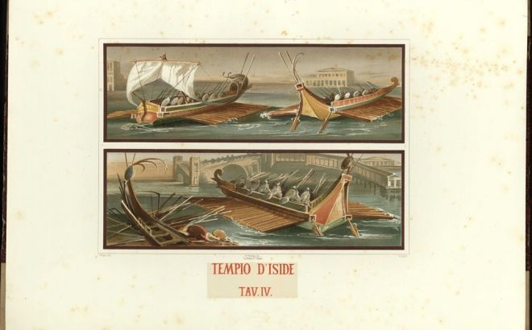
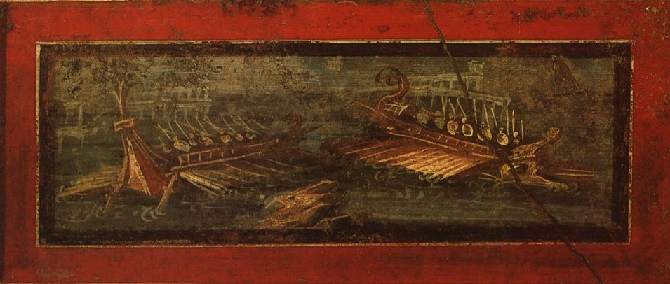
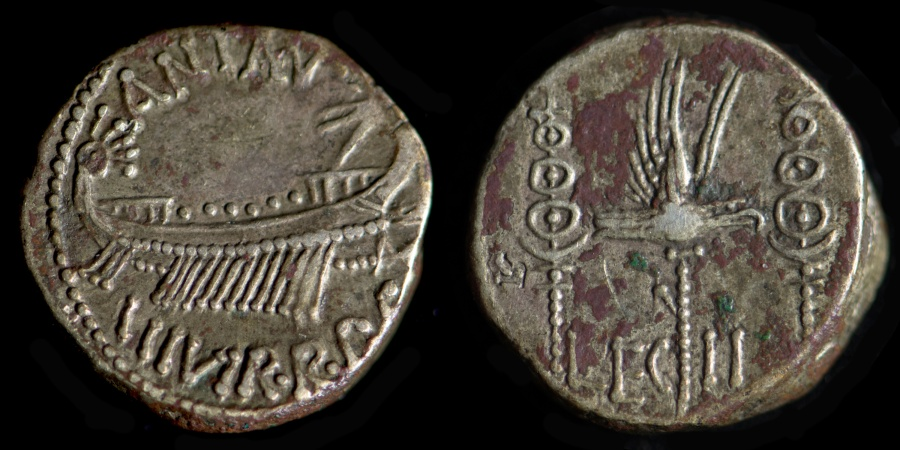

Изображения военных кораблей из Temple of Isis в Помпеях. ок.50 г. н.э. Из книги:
Le Case ed i Monumenti di Pompei disegnati e descritti, by Fausto and Felice Niccolini (Napoli, 1854-96), vol. I
Чтобы не обижать гуманитариев, которые, надеюсь, также имеются среди читателей журнала, оставим до поры до времени математические выкладки и рассуждения и обратимся к лексическим проблемам, которые возникают при наших попытках решить загадку триеры.
Практически все признают, что афинские триеры были самыми быстрыми военными гребными кораблями всех времен. Почти все свободное пространство на них (около трети водоизмещения) занимала «силовая установка» – команда гребцов. Такая картина отмечалась разве что у первых малых миноносцев с паровым двигателем. Триеры имели наибольшее число гребцов на тонну водоизмещения и на один квадратный метр смоченной поверхности среди кораблей, на которых каждый гребец греб одним веслом.
Греческие триеры были очень длинными для своего водоизмещения; их длина не была превзойдена вплоть до появления купеческих галер в Венеции и Генуе в Средние века. Это являлось одной из причин, по которой триеры быстро утрачивали свои мореходные качества с ростом волнения на море. По этой же причине, а также в связи с ограниченностью пространства для размещения запасов воды и продовольствия на борту, триеры вынуждены были в обычном режиме следовать вблизи от берега и каждый день останавливаться для ночевки. Не удивительно поэтому, что все морские сражения с участием триер происходили вблизи от берега и при хороших погодных условиях.
Стремление увеличить скорость военных кораблей по мере их эволюции влекло за собой рост числа гребцов последовательно до 20, 30 и, наконец, до 50 человек. И по мере этих изменений возникали и множились названия этих кораблей.
И вот тут мы подходим к тому вопросу, без решения которого загадку триеры решить невозможно. Вопрос о том, что означают те разнородные названия различных кораблей и классов кораблей, которые дошли до нас через письменные источники и памятники античной эпохи. Если мы поймем это, то поймем и значение термина триера, а следовательно, и композицию гребцов на этом корабле.
Принято считать, как мы уже писали, что первые триеры появились ок. 700 г. до н.э. После этой даты термины для военных кораблей в греческой литературе возникали нередко, однако трудно найти систему в этой терминологии. Если не считать (пока) Гомера и Архилоха, а также единичного использования термина τριήρης (триерес) у Гиппонакта, о чем мы писали раньше, то все разнообразие типов и классов военных кораблей охватывалось общеродовыми терминами, такими как ναῦς (наус) или δόρυ (дору). И только в пятом веке до н.э. (в 462-461гг.) появляется отличительный для конкретного типа корабля термин ναῦς πεντηκόντερος. Впервые он встречается в пифийских эпиникиях Пиндара:
κεῖτο γὰρ λόχμᾳ, δράκοντος δ᾽ εἴχετο λαβροτατᾶν γενύων,
ὃς πάχει μάκει τε πεντηκόντορον ναῦν κράτει,
τέλεσαν ἃν πλαγαὶ σιδάρου.
Pindar Pythian 4.245.
И держали его несытые челюсти змея,
Который вдоль и втолщь
Был громадней корабля в пятьдесят лопастей,
Сколоченного железными ударами...
Пиндар Эпиникии Пифийские, 4.245. <«Аргонавты»> Пер. Гаспаров М.
Для сравнения приведем недавний английский перевод этого отрывка:
For it lay
within a thicket near
the ravenous jaws of a dragon
which, in length and breadth, exceeded
a fifty-oared ship
wrought by iron-nailing blows
Pythian 4. Pindar. Steven J. Willett. 2001
С термина «наус пентеконторос» - пентеконтор – во второй половине пятого века до н.э. началось введение технических терминов для других типов военных гребных кораблей. Интересная деталь: некоторым из этих терминов придавалась обратная сила, т.е. их относили к реалиям и шестого, и седьмого века до н.э. Например, τριακόντορος, πεντηκόντορος и их аналоги с окончанием –ερος (–ерос), которые относились к 30-весельным и 50-весельным кораблям. (Происходило примерно то же, что и с термином «галера», который, появившись в Х веке, стал относиться и ко всем гребным кораблям предыдущих эпох).
Термин τριήρης, триерес относится к совершенно другой категории, если угодно, к другому способу классификации гребных военных кораблей. Дж.Дэвисон описывает ее таким образом: способ, который дает число весел в некоем единичном объеме, но не показывает, сколько таких единичных объемов содержит корабль. И хотя родственные термины μονήρης, διήρης (монерес, диерес) впервые появляются лишь в Ономастиконе Поллукса (2 век н.э.), некоторые исследователи не исключают, что возникли они одновременно с триерой, и, может быть, даже раньше.
Много копий сломано в диспутах о значении еще одной категории терминов: μονόκροτος, δίκροτος, τρίκροτος.
Попытаемся понять, что означают эти термины, общим для которых является значимая часть –κροτος.
Обратимся к отрывку из Фукидида(VIII, 95, 2). Приведем текст оригинала и два его перевода:
[2] Ἀθηναῖοι δὲ κατὰ τάχος καὶ ἀξυγκροτήτοις πληρώμασιν ἀναγκασθέντες χρήσασθαι, οἷα πόλεώς τε στασιαζούσης καὶ περὶ τοῦ μεγίστου ἐν τάχει βουλόμενοι βοηθῆσαι (Εὔβοια γὰρ αὐτοῖς ἀποκεκλῃμένης τῆς Ἀττικῆς πάντα ἦν), πέμπουσι Θυμοχάρη στρατηγὸν καὶ ναῦς ἐς Ἐρετρίαν.
Афиняне тотчас же послали в Эретрию эскадру под начальством стратега Фимохаpa. Они были вынуждены пустить в дело необученные еще экипажи, так как стремились как можно быстрее подать любой ценой помощь самой важной части своих владений. (ведь для них при блокаде Аттики Евбея была всё)
Пер. Стратановского
Афиняне вынуждены были спешно, ввиду происходившей в государстве междоусобицы, употребить в дело не испытанные в бою команды, так как желали возможно скорее защитить важнейшую часть своих владений (после блокады Аттики Евбея была для них всем). Поэтому они отправили стратега Фимохара с флотом к Эретрии.
Пер Ф.Г.Мищенко
Глагол κροτέω ковать, выковывать в переносном смысле означает точно то, что и соответствующий русский глагол – выковывать, делать («ковать кадры», отсюда кузница кадров)
Производный от него глагол συγκροτέω, synkroteo – сбивать, сколачивать – опять же, если брать в переносном смысле, означает обучать, подготовлять, как у Демосфена – συγκεκροτημένοι τὰ τοῦ πολέμου обученные бойцы; а у Полибия – τὰ πληρώματα συγκεκροτημένα – опытные (обученные) гребцы. Учитывая отрицательный смысл, который несет приставка α- староаттическое слово ἀξυγκρότητος (axynkrotetos) = ἀσυγκρότητος значит не сколоченный вместе, т. е. не обученный (πληρώματα (pleromata) – гребцы у Фукидида).
Примерно в таком же смысле используется этот термин в Стратегемах Полиэна: πληρωμάτων συγκεκροτημένων
Хабрий был в Египте в качестве военачальника у царя егип-тян. В то время как царь персов пошел войной с пешей и морской силой, царь египтян, имея многочисленные корабли, испытывал нехватку в опытных экипажах (πληρωμάτων συγκεκροτημένων). Хабрий, выбрав из египтян самых молодых столько, чтобы заполнить двести кораблей, вынув весла из триер и установив большие скамьи на берегу так, чтобы они были размещены по одной, дал им весла и поставил над ними келевстов из тех, что говорили на двух языках, за несколько дней научил их приводить судна в движение при помощи весел; и корабли, когда гребцы были обучены, укомплектовал.
Полиэн, Стратегемы. СПб, Евразия, 2002. Polyaenus (III, 11, 7)
Здесь мы видим также, как проходило сколачивание необученных гребцов в экипажи для новых кораблей.
Таким образом, в момент своего появления имена группы –krotos вовсе не означали число «этажей», или ярусов галеры, как утверждали более поздние авторы. А trikrotos так и вообще не встречался в классических текстах и впервые появляется только у греческого ритора Элия Аристида (117—180 гг.) (Aelius Aristides (Or., 25, 4);)
Из приведенных примеров следует, что составное отглагольное прилагательное monokrotos, будучи примененным к кораблям, означало гребцов, тренированных для совместной гребли в одном ряду, а вовсе не корабль с одним рядом весел. Такой подход находит подтверждение и у Ксенофонта, отрывок из которого мы уже обсуждали в комментариях:
Заметив, что на дозорных кораблях щит поднят, Лисандр тотчас же дал сигнал флоту плыть полным ходом. Рядом шел Форак во главе пехотного войска. Увидев, что лакедемоняне наступают, Конон дал сигнал экипажу занять места на кораблях и оказать врагу посильное сопротивление. Но матросы разбрелись кто куда; на некоторых кораблях из трех ярусов весел гребцы остались только на двух, на иных на одном, а на иных и вовсе не было гребцов. (αἱ μὲν τῶν νεῶν δίκροτοι ἦσαν, αἱ δὲ μονόκροτοι, αἱ δὲ παντελῶς κεναί) Лишь триэра Конона и еще семь, бывших под его командой, да «Паралия» вышли в бой с полным числом гребцов…
английский перевод:
some of the ships had but two banks of oars manned, some but one, and some were entirely empty
Xenophon Hell. 2.1.28 (Ксенофонт, Греческая история, пер. С.Я.Лурье)
Первым серьезным современным исследователем, который усомнился в факте размещения гребцов на триере в три яруса был, пожалуй, известный британский историк Уильям Вудторп Тарн. Свои доводы он формировал, начиная с 1905 года, и обобщил их в 1933 году. В своих заключениях он опирался на свидетельства историков и обнаруженные к тому времени надписи, считая малозначительными заключения схоластов, лексикографов, а также произведения художников, призывая критически подходить к их творениям.
Вот пять провозглашенных им основных принципов:
A.—The terms thranite, zugite, thalamite, have nothing to do with the horizontal rows (or banks) of oars. The rowers were in three divisions, or squads, thranites astern, zugites amidships, thalamites in the bows. This applies to triremes and the larger polyereis.
B.—The terms τρίκροτος, δίκροτοσ and μονόκροτος refer primarily to these squads.
C.—There is no evidence of any kind, good or bad, for the dogma that, among Greeks and Romans, at all times and in all places, one man rowed one oar ; but there is good evidence (1) that in the triremes of the Peloponnesian war one man rowed one oar and (2) that the same applies to the Athenian quadriremes and quinqueremes of the fourth century.
D.—There is some evidence (1) that in the first century B.C. more than one man sometimes rowed one oar and (2) that the larger polyereis were too low in the water, too light, and of too simple an arrangement, to admit of the accepted theory being applicable to them.
E.—There is no good evidence, and very little bad, that can be made to refer to the accepted theory. There is none that necessitates, or even invites, this theory.
A. Термины транит, зигит, таламит (thranite, zugite, thalamite) не имеют ничего общего с горизонтальными рядами (banks) весел. Гребцы были поделены на три подразделения (divisions), или отряда (squads), траниты размещались ближе к корме, зигиты в средней части корабля, таламиты в носовой. Это относится как к триерам, так и и более крупным полиерам.
B. - Термины τρίκροτος, δίκροτοσ и μονόκροτος относились первоначально к этим отрядам.
C. - Нет никаких доказательств, позитивных или негативных, хороших или плохих, для догмы о том, что у греков и римлян во все времена и во всех местах один человек греб одним веслом; но есть убедительные доказательства (1), что в триерах периода Пелопоннесской войны один человек греб одним веслом и (2) то же самое относится к афинским квадриремам и квинкиремам четвертого века.
D. - Есть некоторые доказательства, (1) что в первом веке до нашей эры иногда одним веслом гребли более одного человека и (2) большие полиэры имели слишком низкий надводный борт, были слишком легки и слишком просты по конструкции, чтобы признать, что общепринятая теория применима к ним.
Е. - Нет убедительных («хороших») доказательств, и очень мало плохих, которые могут быть использованы для подтверждения общепринятой теории. Нет ни одного свидетельствва, которое бы требовало или хотя бы предполагало эту теорию.
При этом к «большим полиэрам» («большим полиремам») Тарн относит гребные корабли от тетреры (τετρήρης, квадрирема) до декеры (δεκήρης, децимрема, или децирема). К кораблям с бóльшим числом рядов он относится скептически, считая, что достоверных свидетельств их существования нет.

Морское сражение. Фреска.60—79 гг. Помпеи, Дом Веттиев (VI, 15, 1)
Тарн пытается доказать правоту моряков, о позиции которых мы говорили выше, исследуя историческую эволюцию систем гребли как на основе изучения литературных источников, так и археологических памятников. Археологические памятники относятся в основной своей массе к римской эпохе и мало чего говорят о греческих кораблях. За одним исключением: монеты. Они являются ценным свидетельством прежде всего потому, что позволяют точно датировать находящиеся на них изображения. И за очень малым исключением, только монеты содержат изображения триер. Но изображевния на монетах очень маленькие, и каждый гравер может произвольно выбрать или опустить ту или иную деталь этих изображений. Приведем пример. Легионерский денарий императора Марка Антония:

Легионерский денарий. Выпущен накануне битвы при Акциуме, 32 г. до н.э. Римская империя. Император Марк Антоний
Иногда изображенный на монете корабль называют флагманским кораблем Марка Антония в сражении при Акциуме (а это была децирема, как нам известно). Обычно его изображают с одним рядом весел, число которых зависит от прихоти гравера. В любом случае, делать выводы о конструкции корабля по такому изображению бессмысленно.
Все известные нам изображения военных кораблей показывают либо один ряд весел, либо весла, расположенные ступенчато, зигзагообразно, · . · . · . ·. , причем расстояния между ступеньками очень небольшие.
К каким выводам пришли морские историки, исследуя приведенные выше доводы, расскажем в следующих постах.